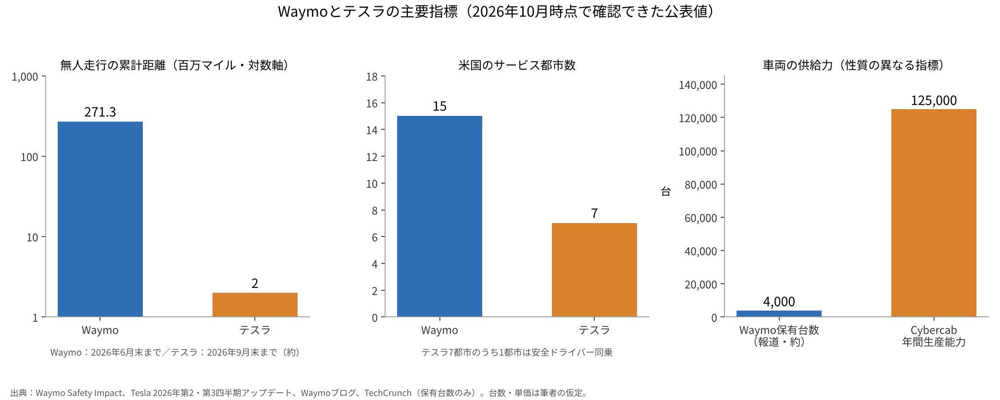
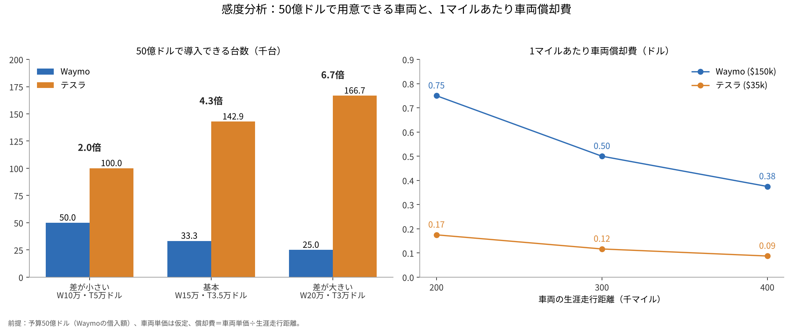

Waymoとテスラ、自動運転の覇権を分けるのは安全の実績か量産の台数か
Waymoとテスラ、自動運転の覇権を分けるのは「無人で走った距離」か「つくれる台数」か。本稿はこの問いを、公表値で確かめられる範囲に限って検討する。
両社は同じ「ロボタクシー」を目指しながら、センサーの選び方も、地図への依存度も、車両をどう調達するかも大きく異なる。
一次資料の数字と、前提を明示した簡単な試算、その感度分析を通じて、どちらの道筋がどの条件で有利になるのかを整理したい。

問いと背景
自動運転の水準は、SAE J3016という国際的な定義で語られることが多い[1]。SAEレベル4とは、決められた運行条件の範囲内で、人が介入を求められることなくシステムが運転のすべてを担う段階である。これに対しレベル2は、加減速と操舵を支援するが、人が常に監視する段階を指す[1]。テスラの「FSD（Supervised）」は、名称のとおり監視を前提とするレベル2の運転支援である。
Waymoの方式は、複数の種類のセンサーを重ねる設計だ。LiDARとは、レーザー光を周囲に当てて反射までの時間から物体との距離を三次元で測るセンサーである。第6世代のWaymo Driverは、カメラ13台、LiDAR4台、レーダー6台を備え、前世代より費用を大きく下げたと説明されている[2]。加えてWaymoは、HDマップ、すなわち車線や標識の位置をセンチメートル単位で記録した高精度地図を、走行地域ごとに整える方式をとってきた。
テスラの方式は、カメラ映像を主な入力とし、エンドツーエンドの学習で運転を組み立てるものだ。エンドツーエンドとは、認識・判断・操作を個別の規則で組み合わせるのではなく、入力から運転操作までを一つのニューラルネットワークに学習させる考え方である。センサーの費用を抑え、自社工場で大量に生産した車をそのまま使える点が強みとされる。
規模の公表値を見ると、Alphabetは2026年4月、Waymoが週50万回を超える完全自動運転の乗車に達したと述べた[3]。Waymoは2026年9月に米国で15都市目のサービスを始め、10月には50億ドル（約7,895億円）の借入を発表している[4]。一方テスラは、2026年第2四半期の資料で米国7都市圏でのロボタクシー運行を示し、そのうちサンフランシスコ湾岸地域は安全ドライバーが同乗する形である[5]。第3四半期の資料では、Cybercabの生産開始と、テキサス工場での年12万5,000台超の生産能力が示された[6]。
データと方法
用いた数字と扱い方は次のとおりである。Waymoの無人走行距離は、同社の安全データ公開ページにある2026年6月末までの「乗客のみ（運転者なし）」の累計2億7,130万マイルを用いた[7]。テスラの無人走行距離は、第3四半期資料にある「ロボタクシーの無人走行の累計がおよそ200万マイル」という記述を用いた[6]。走行距離の比は、271.3÷2.0でおよそ136倍となる。
安全性は、Waymoの公開データと査読論文を参照した。Waymoのページでは、人間の運転と比べて重傷以上の事故が95%少なく、エアバッグが作動した事故と負傷を伴う事故がそれぞれ82%少ないとされる[7]。2025年に学術誌に受理された論文は、5,670万マイル時点で、交差点での車両同士の負傷事故が96%少ないと報告している[8]。テスラについては、ロボタクシーの事故率を人間と比べた公表値を、今回確認できなかった。
試算は、Waymoの借入額と同じ50億ドルという予算で、各社が何台の車両を用意できるかを考える。車両単価はどちらも公表されていないため、筆者の仮定である。基本ケースでは、センサーを含むWaymo車両を1台15万ドル、Cybercabを1台3万5,000ドルと置いた。式は次のとおりである。
導入台数＝予算÷車両単価
1マイルあたり車両償却費＝車両単価÷生涯走行距離
年間乗車回数＝導入台数×1台あたり週間乗車回数×52
1台あたり週間乗車回数は、週50万回[3]を報道ベースの保有台数約4,000台[13]で割り、約125回とした。保有台数は一次資料で確認できないため、この値は参考にとどまる。
結果
基本ケースでは、50億ドルでWaymoはおよそ3万3,333台、テスラはおよそ14万2,857台を用意できる。台数の差は約4.3倍である。生涯走行距離を30万マイルとすると、1マイルあたりの車両償却費はWaymoが0.50ドル、テスラが約0.12ドルとなる。週125回の稼働を仮定すると、年間の乗車回数はWaymoが約2億1,667万回、テスラが約9億2,857万回の計算になる。

| 指標 | Waymo | テスラ | 出典 |
|---|---|---|---|
| 無人走行の累計距離 | 2億7,130万マイル（2026年6月末） | 約200万マイル（2026年9月末） | [7][6] |
| 米国のサービス都市数 | 15都市 | 7都市圏（うち1つは安全ドライバー同乗） | [4][5] |
| 週間乗車回数 | 50万回超（2026年4月） | 公表なし | [3] |
| 車両の供給 | 保有約4,000台（報道） | Cybercab年12万5,000台超の生産能力 | [13][6] |
| 50億ドルでの導入台数（基本ケース） | 約3万3,333台 | 約14万2,857台 | 筆者試算 |
ここから読み取れるのは、二つの指標が逆を向いていることだ。実績の厚みではWaymoが二桁以上先行し、量産と単価の面ではテスラの構造が有利に働く。
感度分析
前提を三つの方向に動かして、結論がどれだけ揺れるかを確かめた。
第一に車両単価の差である。差が小さいケース（Waymo10万ドル、テスラ5万ドル）では台数差は2.0倍、基本ケースでは4.3倍、差が大きいケース（Waymo20万ドル、テスラ3万ドル）では6.7倍となる。
第二に生涯走行距離である。20万マイルではWaymo0.75ドル、テスラ0.175ドル、40万マイルではWaymo0.375ドル、テスラ0.0875ドルとなり、どの距離でも単価の比がそのまま残る。
第三に稼働率である。1台あたり週75回、125回、175回と置くと、50億ドル分の車両による年間乗車回数は、Waymoで1億3,000万回、2億1,667万回、3億333万回、テスラで5億5,714万回、9億2,857万回、13億回となる。
| 変える前提 | 低いケース | 基本ケース | 高いケース |
|---|---|---|---|
| 単価の組み合わせ（W/T） | 10万/5万ドル：2.0倍 | 15万/3.5万ドル：4.3倍 | 20万/3万ドル：6.7倍 |
| 生涯走行距離 | 20万マイル：W0.75/T0.175ドル | 30万マイル：W0.50/T0.117ドル | 40万マイル：W0.375/T0.0875ドル |
| 週間稼働（年間乗車回数） | 75回：W1.30億/T5.57億回 | 125回：W2.17億/T9.29億回 | 175回：W3.03億/T13.0億回 |

どの組み合わせでも、同じ予算で用意できる台数はテスラが2倍以上となった。ただし、これはテスラの車両が人の監視なしに同じ稼働を実現できる場合に限った話である。

考察
反対の見方も有力である。安全の実績は、台数の多さで置き換えられない。Waymoには2億マイルを超える無人走行と、査読を経た比較研究がある[7][8]。テスラの無人走行は約200万マイルで、統計的に人間と比べるには距離がまだ短い。仮に台数が多くても、規制当局と利用者の信頼が得られなければ稼働には結びつかない。さらに、Waymoも新しい車両の導入で単価を下げつつあり[2]、単価の差は時間とともに縮む可能性がある。
データにも限界がある。NHTSAの事故報告制度（Standing General Order）は、自動運転システムやレベル2の使用中に起きた一定の事故の報告を義務づけるが、件数は走行距離で調整されておらず、企業間の比較には注意が必要だと明記している[9]。カリフォルニア州公益事業委員会（CPUC）の四半期報告では、2026年時点で無人の商用運行の許可を持つ事業者としてWaymoのみが掲載されている[10]。ディスエンゲージメント、すなわち自動運転モードが解除され人が運転を引き継ぐ事象の報告制度も州にはあるが[11]、試験車両の数字であり、事業の成否を直接は示さない。テスラ自身も、自社の安全報告で用いる人間の平均値には推定を含むと説明している[12]。
試算の不確実性は大きい。車両単価、生涯走行距離、遠隔監視の人件費、保険、充電や清掃の費用は、どれも公表されていない。保有台数も報道の数字である。
結論を変えうる証拠ははっきりしている。テスラが安全ドライバーや監視なしで、複数の都市において数千万マイル規模の無人走行を重ね、走行距離で調整した事故率を公表すれば、量産の利点はそのまま覇権に近づく。逆に、Waymoが車両単価を公表できる水準まで下げ、週100万回規模の乗車を安定して示せば、実績の先行が規模の差を埋めるかもしれない。
結論
現時点の公表値では、無人走行の実績、都市数、許認可の面でWaymoが先行している。一方、同じ予算で用意できる台数では、前提を動かしてもテスラが2倍から6.7倍の範囲で上回った。覇権を分けるのは、テスラが量産の利点を無人運行の安全実績に変えられるか、Waymoが実績を保ったまま単価を下げられるか、という二つの速度の競争だと考えられる。
僕はこう見ている
覇権を取るのはテスラだと思う。理由は、自分で大量に車をつくれるからだ。電気自動車はもうすぐそこまで来ている。あとは規制緩和や既得権益との戦いがいちばん大きく、それがいちばん大変なのだと思う。
僕はまだロボタクシーにもFSDにも乗ったことがない。早く乗ってみたい。
両社の株を持っている。Alphabetを350株、Teslaを400株だ。そのうえで、テスラに勝ってほしいと思っている。
出典
- SAE International（ANSI Blog経由）「SAE Levels of Driving Automation: J3016-2021」2021年 https://blog.ansi.org/sae-levels-driving-automation-j-3016-2021/
- Waymo「Meet the 6th-generation Waymo Driver」2024年8月19日 https://waymo.com/blog/2024/08/meet-the-6th-generation-waymo-driver/
- Alphabet「Alphabet Announces First Quarter 2026 Results」2026年4月29日 https://s206.q4cdn.com/479360582/files/doc_financials/2026/q1/2026q1-alphabet-earnings-release.pdf
- Waymo「Waymo closes $5 billion debt financing」2026年10月8日 https://waymo.com/blog/2026/10/waymo-closes-5-billion-debt-financing/
- Tesla, Inc.「Q2 2026 Update」（Form 8-K Exhibit 99.1）2026年7月22日 https://www.sec.gov/Archives/edgar/data/0001318605/000162828026049213/exhibit991.htm
- Tesla, Inc.「Q3 2026 Update」（Form 8-K Exhibit 99.1）2026年10月21日 https://www.sec.gov/Archives/edgar/data/1318605/000162828026066738/exhibit9914.htm
- Waymo「Waymo Safety Impact」（2026年6月までのデータ、2026年10月28日閲覧） https://waymo.com/safety/impact/
- Kusano, K. D., Scanlon, J. M., Chen, Y.-H., McMurry, T. L., Gode, T., Victor, T.「Comparison of Waymo Rider-Only Crash Rates by Crash Type to Human Benchmarks at 56.7 Million Miles」Traffic Injury Prevention（2025年受理）、arXiv:2505.01515、2025年5月2日 https://arxiv.org/abs/2505.01515
- 米国運輸省道路交通安全局（NHTSA）「Standing General Order on Crash Reporting」（2026年9月15日までのデータ、2026年10月28日閲覧） https://www.nhtsa.gov/laws-regulations/standing-general-order-crash-reporting
- カリフォルニア州公益事業委員会（CPUC）「AV Program Quarterly Reporting」2026年8月18日更新 https://www.cpuc.ca.gov/regulatory-services/licensing/transportation-licensing-and-analysis-branch/autonomous-vehicle-programs/quarterly-reporting
- カリフォルニア州車両局（DMV）「Disengagement Reports」2026年10月28日閲覧 https://www.dmv.ca.gov/portal/vehicle-industry-services/autonomous-vehicles/disengagement-reports/
- Tesla, Inc.「Vehicle Safety Report」2026年10月28日閲覧 https://www.tesla.com/VehicleSafetyReport
- TechCrunch「Waymo is scaling fast. Here's what the fleet data shows」2026年9月24日（報道・補足） https://techcrunch.com/2026/09/24/waymo-is-scaling-fast-heres-what-the-fleet-data-shows/
写真：Heber Davis、Jan Valečka（Unsplash）。図はYUKI CAPITALが作成
日々の数字と判断は、Xで記録している。